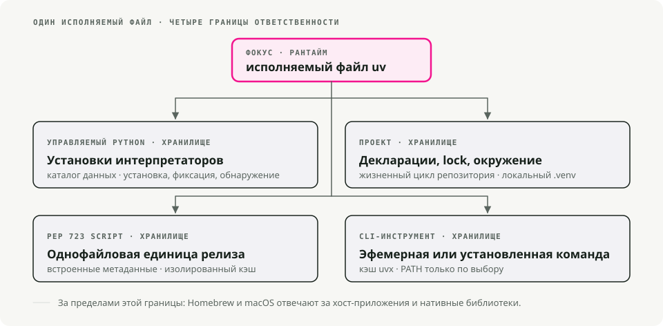
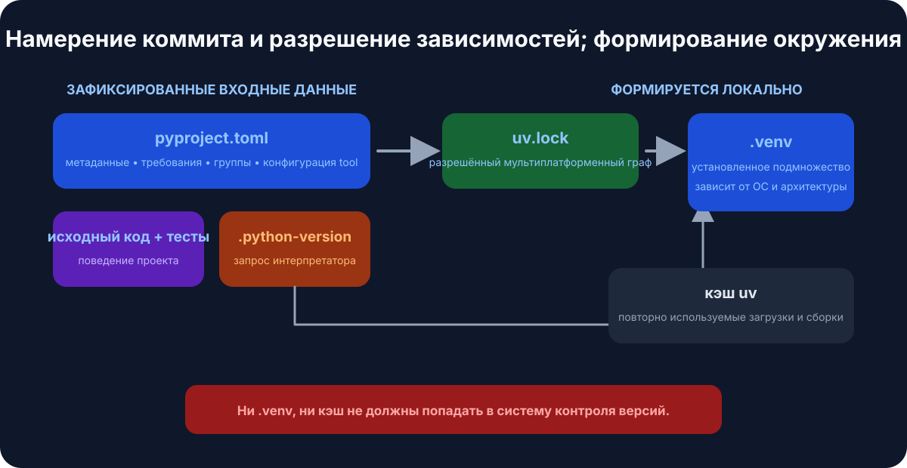
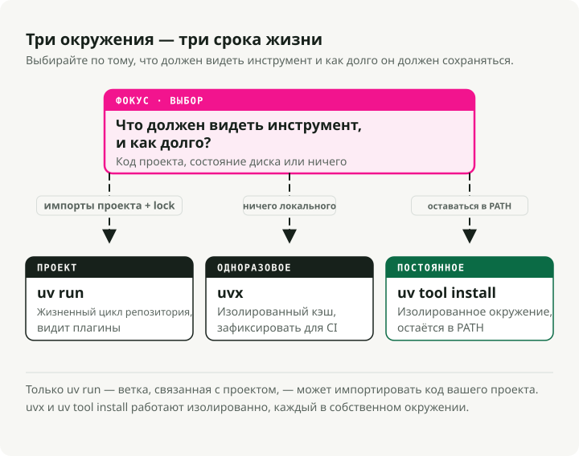
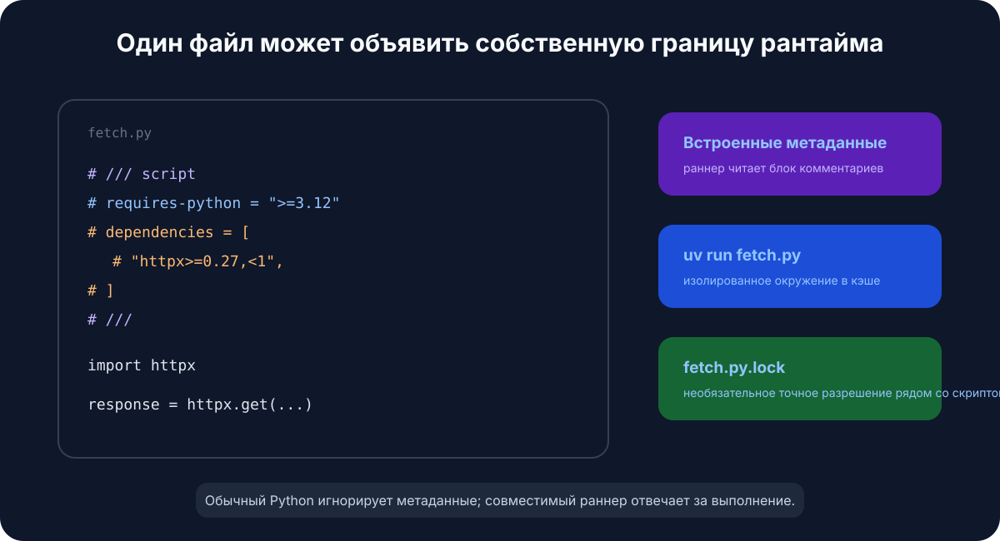

Автоматический перевод
Эта статья была автоматически переведена с оригинальной английской версии.
uv на macOS: управление версиями Python, проектами и инструментами
Быстрый старт
# Install uv
brew install uv
# For new projects (modern workflow)
uv init # create project structure
uv add pandas numpy # add dependencies
uv run train.py # run your script
# For existing projects (legacy workflow)
uv venv # create virtual environment
uv pip install -r requirements.txt # install dependencies
uv run train.py # run your script
# Run tools without installing them
uvx ruff check . # run linter
uvx black . # run formatter
# Run a single-file script with its own dependencies (no project needed)
uv run fetch.py # uv reads the inline deps and runs it
Зачем использовать uv для Python на macOS?
Если вы давно работаете с Python, скорее всего, в зависимости от проекта у вас в ходу pip, virtualenv, pip-tools, pyenv и poetry. uv делает все это одним бинарником.
Он написан на Rust, и на моей машине устанавливает пакеты примерно в 10–100 раз быстрее старого стека. Но для меня главное преимущество в том, что я перестал переключаться между инструментами посреди задачи.

Он заменяет pip и pip-tools для управления пакетами, pyenv для установки версий Python, virtualenv/venv для окружений, pipx для запуска инструментов и poetry или pdm для рабочих процессов проекта.
Установка uv
Самый простой способ установить uv на macOS — через Homebrew:
brew install uv
uv автоматически определяет архитектуру вашего Mac (Apple Silicon или Intel), поэтому дополнительная настройка не нужна.
Чтобы поддерживать его в актуальном состоянии:
brew upgrade uv
# OR
uv self update
Базовые концепции
uv покрывает три сценария использования:
- Проекты — разработка приложения или библиотеки с зависимостями.
- Скрипты — запуск однопоточного Python-скрипта с inline-зависимостями.
- Инструменты — глобальный запуск утилит командной строки (например,
ruffилиhttpie).
1. Управление проектом
Для новых проектов uv использует стандартный pyproject.toml для конфигурации и кроссплатформенный uv.lock для воспроизводимых сборок.

Создайте новый проект:
uv init my-project
cd my-project
Это создаст pyproject.toml, .gitignore и hello.py.
Добавьте зависимости:
# Runtime dependencies
uv add pandas requests
# Development dependencies
uv add pytest ruff --dev
Запустите код:
uv run hello.py
uv сам управляет виртуальным окружением в .venv. Активировать его вручную не нужно.
2. Управление версиями Python
uv сам устанавливает и управляет версиями Python, которые хранятся в ~/.cache/uv. Если вы до этого использовали для этого pyenv, от него можно отказаться.
Установите конкретную версию:
uv python install 3.12
Зафиксируйте версию для проекта:
uv python pin 3.11
Это создаст файл .python-version. При следующем uv run будет использоваться зафиксированная версия, и при необходимости она будет загружена. В итоге у вашей команды и CI будет одна и та же версия Python без дополнительной координации.
3. Запуск инструментов через uvx и uv tool install
uvx (алиас для uv tool run) запускает Python CLI-инструменты, не добавляя их в глобальное окружение или зависимости проекта.
# Run a linter
uvx ruff check .
# Run a formatter
uvx black .
# Start a temporary Jupyter server
uvx --from jupyterlab jupyter lab
Каждый инструмент запускается в собственном временном окружении, поэтому конфликтов версий с тем, что уже установлено в проекте, не возникает.

Две детали, которыми я постоянно пользуюсь:
- Фиксируйте версию прямо в команде с помощью
@:uvx ruff@0.6.0 check ., или принудительно берите самую новую черезuvx ruff@latest. - Имя команды не совпадает с именем пакета? Используйте
--from. Пакетjupyterlabпоставляет командуjupyter, значит нужно писатьuvx --from jupyterlab jupyter lab. То же самое для--from httpie http. - Нужна дополнительная зависимость для плагина? Добавьте ее через
--with:uvx --with mkdocs-material mkdocs serve.
Если вы пользуетесь инструментом каждый день, установите его один раз, а не поднимайте свежее окружение при каждом запуске:
uv tool install ruff # now `ruff` is on your PATH
uv tool list # see what's installed
uv tool upgrade --all # update everything
uv tool uninstall ruff
Практическое правило: uvx для одноразовых запусков и CI, uv tool install для повседневных инструментов.
Legacy-проекты (requirements.txt)
requirements.txt долго служил верой и правдой. Но это плоский список пакетов без lock-файла, без разделения зависимостей приложения и dev-зависимостей и без информации о том, почему что-то зафиксировано. Это терпимо до того дня, когда вы пытаетесь воспроизвести сборку восьмимесячной давности и обнаруживаете, что «зафиксировано» означало лишь то, что в тот момент разрешил PyPI.
Если проект ваш, мигрируйте его. uv читает ваш текущий список напрямую в pyproject.toml:
uv init --bare # minimal pyproject.toml, no scaffolding
uv add -r requirements.txt # import runtime dependencies
uv add --dev -r requirements-dev.txt # and dev ones, if you split them
Теперь у вас есть pyproject.toml и полноценный uv.lock, который фиксирует точные разрешенные версии. Проверьте, что все перенеслось корректно, через uv pip freeze, удалите старый requirements.txt и не оглядывайтесь назад.
Но, возможно, вы запускаете один и тот же requirements.txt еще со времен Python 3.6 и не особо заинтересованы в моем мнении на этот счет. Справедливо. uv по-прежнему работает как drop-in replacement для pip и venv, без какой-либо миграции:
# Create a virtual environment
uv venv
# Install dependencies
uv pip install -r requirements.txt
# Run it
uv run python app.py
Те же команды, что вы и так знаете, только быстрее. Старый workflow не становится хуже; просто теперь вы больше не обязаны им пользоваться.
Однофайловые скрипты с inline-зависимостями
Именно эта возможность изменила то, как я пишу одноразовый и glue code. Python-скрипт может объявлять собственные зависимости прямо внутри файла, в блоке комментариев, определенном в PEP 723. Никакого pyproject.toml, никакого requirements.txt, никакого виртуального окружения, которое нужно создавать — uv run читает блок, собирает кэшированное окружение и запускает файл.
Важно четко понимать, что именно здесь делает работу: это не языковая возможность Python и не изобретение uv. Блок — это всего лишь комментарий, поэтому обычный python fetch.py его игнорирует и падает на отсутствующих импортах. PEP 723 — это общий стандарт, поэтому любой совместимый раннер читает один и тот же блок — pipx run, Hatch и PDM тоже его поддерживают. Просто uv сейчас самый быстрый способ этим пользоваться, поэтому в остальной части раздела используется uv run.

Вот полный пример в одном файле, fetch.py:
# /// script
# requires-python = ">=3.12"
# dependencies = [
# "httpx",
# "rich",
# ]
# ///
import httpx
from rich import print
print(httpx.get("https://api.github.com/repos/astral-sh/uv").json())
Запуск:
uv run fetch.py
При первом запуске httpx и rich будут разрешены и установлены в кэшированное окружение; последующие запуски переиспользуют его и стартуют мгновенно.
Блок метаданных не обязательно писать вручную. uv может сгенерировать и отредактировать его за вас:
# Create a new script with the block pre-filled
uv init --script fetch.py --python 3.12
# Add or remove dependencies
uv add --script fetch.py httpx rich
uv remove --script fetch.py rich
Для быстрого эксперимента можно вообще обойтись без блока и передать зависимости прямо в командной строке:
uv run --with httpx --with rich fetch.py
Почему это отлично подходит для skill- и automation-скриптов
Я постоянно использую это для небольших скриптов, которые не заслуживают отдельного проекта: одноразовое исправление данных, CI-хелпер, скрипт для Claude Code skill, cron job. Здесь единица доставки — сам скрипт. Его можно положить в gist, закоммитить в любой репозиторий или передать коллеге, и uv run — это единственное, что ему понадобится для корректного запуска.
Сделайте его напрямую исполняемым через shebang:
#!/usr/bin/env -S uv run --script
# /// script
# dependencies = ["httpx"]
# ///
import httpx
...
chmod +x fetch.py
./fetch.py # uv handles the environment behind the scenes
-S разбивает shebang на отдельные аргументы, чтобы env передал --script в uv.
Locking и pinning для скриптов
Для скриптов, которые должны продолжать работать через месяцы, есть два варианта.
Зафиксируйте точное разрешение рядом со скриптом:
uv lock --script fetch.py # writes fetch.py.lock
Или зафиксируйте момент времени, чтобы uv рассматривал только пакеты, выпущенные до указанной даты — удобно для воспроизводимости без lock-файла:
# /// script
# dependencies = ["httpx"]
# [tool.uv]
# exclude-newer = "2025-04-17T00:00:00Z"
# ///
Полезные советы и приемы
Еще несколько вещей, которыми я регулярно пользуюсь и которые неочевидны из быстрого старта.
Синхронизируйтесь из lock-файла в CI. uv sync устанавливает ровно то, что указано в uv.lock. Добавьте --frozen, чтобы явно падать, если lock-файл устарел, вместо молчаливого повторного разрешения — именно этого и хочется в CI и Docker-сборках.
uv sync --frozen
Группируйте dev-зависимости. Помимо --dev, вы можете определить именованные группы зависимостей в pyproject.toml (docs, lint, test) и синхронизировать только нужные:
uv add --group docs mkdocs-material
uv sync --only-group docs
Проверяйте дерево зависимостей. uv tree показывает, что чем было подтянуто, а --outdated помечает обновления:
uv tree
uv tree --outdated
Экспортируйте в requirements.txt, если какой-то downstream-инструмент все еще его ожидает:
uv export --format requirements-txt > requirements.txt
Запускайте одноразовый Python с дополнительными пакетами без проекта:
uv run --with pandas --with matplotlib python
Управляйте кэшем, когда заканчивается место на диске или сборка пошла не туда:
uv cache clean # wipe the whole cache
uv cache prune # remove only unused entries
Почему это быстро
Здесь важны три вещи. Инструмент написан на Rust, поэтому при каждом вызове нет накладных расходов на запуск Python. Он глобально кэширует собранные wheel-пакеты — как только numpy установлен в одном проекте, его установка в другом становится практически мгновенной (на macOS используются copy-on-write links). И он скачивает и устанавливает пакеты параллельно, а не по одному.
Краткое резюме
| Task | Old way | The uv way |
|---|---|---|
| Install Python | pyenv install 3.12 |
uv python install 3.12 |
| New project | mkdir proj && cd proj && python -m venv .venv |
uv init proj |
| Install package | pip install pandas && pip freeze > requirements.txt |
uv add pandas |
| Run script | source .venv/bin/activate && python script.py |
uv run script.py |
| Script + deps | проект или ручной venv ради одного файла | inline-блок PEP 723 + uv run |
| Run tool once | pipx run black |
uvx black |
| Install a tool | pipx install ruff |
uv tool install ruff |
| Reproducible CI | pip install -r requirements.txt |
uv sync --frozen |
Я перевел свой Python workflow на uv вскоре после его выхода и с тех пор не возвращался назад. Если вы все еще сидите на старом стеке, попробуйте его на следующем проекте — именно так я его и протестировал, прежде чем перевести на него все остальное.